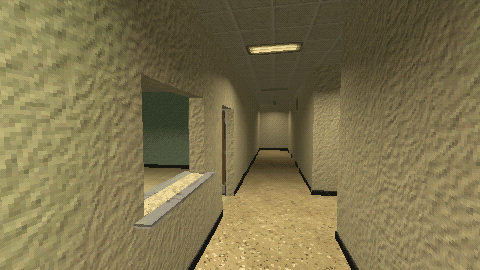

Tutorials › Build a Liminal Office Level with GridMap
How to Build a Liminal Office Level with GridMap in Godot 4
Paint a level from 2 m pieces with GridMap, with lights and doors.

Paint a level from 2 m kit pieces with GridMap: 2 x 4 x 2 m cells with Center Y off, one GridMap per layer (floors, ceilings and one per wall direction), a light for every lit piece from the library's metadata, and door scenes in the doorways.
Script: gridmap_office.gd (MIT) · Godot 4.3 or newer · its folder on GitHub
How to use it
- Add
gridmap_office.gdto a Node3D and callbuild_room(Vector2i(4, 3)): a room of 4 x 3 cells with rows of ceiling lights and a doorway. add_lights(grid)gives every lit piece its light;add_door(cell, rot_deg)puts a door scene in a doorway's cell.LIBis the path of the MeshLibrary.
What it needs
- A MeshLibrary of 2 x 2 m pieces with their origin on the floor; for
add_lights, the light table in itscordatix_lightsmetadata.
Try it free
The Liminal PSX Office Kit - Free Sampler has 8 pieces in a MeshLibrary at the path the script uses, with the light table, and the wooden door.
How it was tested
Checked with godot --headless --check-only in Godot 4.3 and 4.7.2.
The code
extends Node3D
## How to Build a Liminal Office Level with GridMap in Godot 4
## Cordatix Godot 4 PSX tutorials, MIT licensed: https://github.com/GoldenSparrow-Dev/cordatix-godot-psx-tutorials
## The devlog: https://cordatix.itch.io/liminal-psx-office-kit/devlog/1716386/how-to-build-a-liminal-office-level-with-gridmap-in-godot-4-liminal-psx-office-kit
const LIB := "res://cordatix/liminal_psx_office_kit/liminal_psx_office_kit.meshlib.tres"
const NORTH := 0.0
const WEST := 90.0
const SOUTH := 180.0
const EAST := 270.0
func make_grid(layer_name: String) -> GridMap:
var grid := GridMap.new()
grid.name = layer_name
grid.mesh_library = load(LIB)
grid.cell_size = Vector3(2.0, 4.0, 2.0) # 2 m cells, 4 m storeys
grid.cell_center_y = false # piece origins sit on the floor
add_child(grid)
return grid
func place(grid: GridMap, cell: Vector3i, item_name: String, rot_deg := 0.0) -> void:
var id := grid.mesh_library.find_item_by_name(item_name)
var basis := Basis(Vector3.UP, deg_to_rad(rot_deg))
grid.set_cell_item(cell, id, grid.get_orthogonal_index_from_basis(basis))
func build_room(size: Vector2i) -> void:
var floors := make_grid("Floors")
var ceilings := make_grid("Ceilings")
var walls := {}
for rot in [NORTH, WEST, SOUTH, EAST]:
walls[rot] = make_grid("Walls%d" % int(rot))
for x in size.x:
for z in size.y:
var c := Vector3i(x, 0, z)
place(floors, c, "floor")
place(ceilings, c, "ceiling_light" if x % 2 == 0 else "ceiling") # rows of lamps along z
if z == 0:
place(walls[NORTH], c, "wall", NORTH)
if z == size.y - 1:
place(walls[SOUTH], c, "wall_doorway" if x == 0 else "wall", SOUTH)
if x == 0:
place(walls[WEST], c, "wall", WEST)
if x == size.x - 1:
place(walls[EAST], c, "wall", EAST)
func add_lights(grid: GridMap) -> void:
var table: Dictionary = grid.mesh_library.get_meta("cordatix_lights", {})
for cell in grid.get_used_cells():
var item_name := grid.mesh_library.get_item_name(grid.get_cell_item(cell))
if table.has(item_name):
var p: Array = table[item_name]["pos"]
var light := OmniLight3D.new()
light.position = grid.map_to_local(cell) + grid.get_cell_item_basis(cell) * Vector3(p[0], p[1], p[2])
light.light_energy = table[item_name]["energy"]
light.omni_range = table[item_name]["range"]
grid.add_child(light)
func add_door(cell: Vector3i, rot_deg: float) -> Node3D:
var door: Node3D = load("res://cordatix/liminal_psx_office_kit/pieces/door_wood.tscn").instantiate()
door.position = Vector3(cell.x * 2 + 1, cell.y * 4, cell.z * 2 + 1)
door.rotation_degrees.y = rot_deg
add_child(door)
return door
The devlog and the pack
The step-by-step walkthrough is the devlog How to Build a Liminal Office Level with GridMap in Godot 4 (Liminal PSX Office Kit) on itch.io, written for Liminal PSX Office Kit, a PS1-style asset pack by Cordatix for Godot 4, Unity, Unreal and Blender.